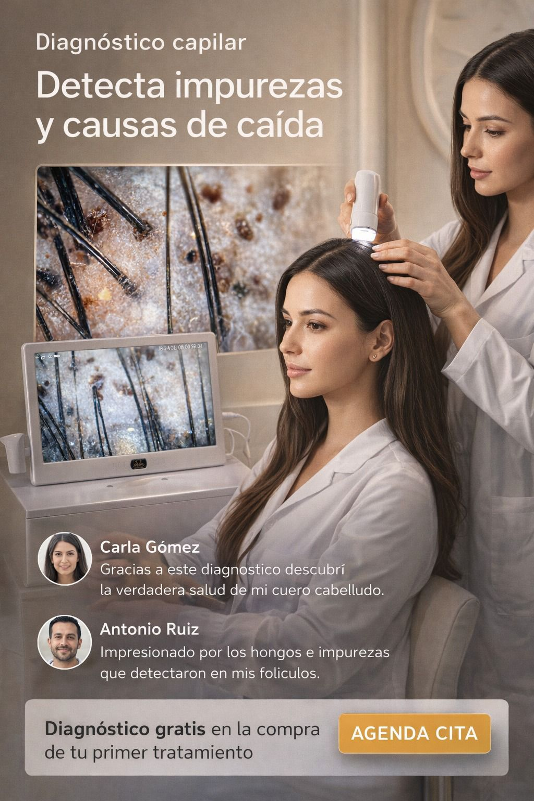

CAVALISS · DIAGNÓSTICO CAPILAR
Cinco años de Cancún
viven en tu raíz.

TRICOSCOPIO · 60×
Vista bajo tricocámara · Cavaliss Spa Capilar
Folículo obstruido detectado
847
diagnósticos realizados en Cancún
Tu diagnóstico tarda 20 minutos.
El daño lleva años acumulándose.
🔥
SOLO 10 LUGARES ESTA SEMANA
QUIERO VER EL MÍO →
Zona Hotelera · Cancún